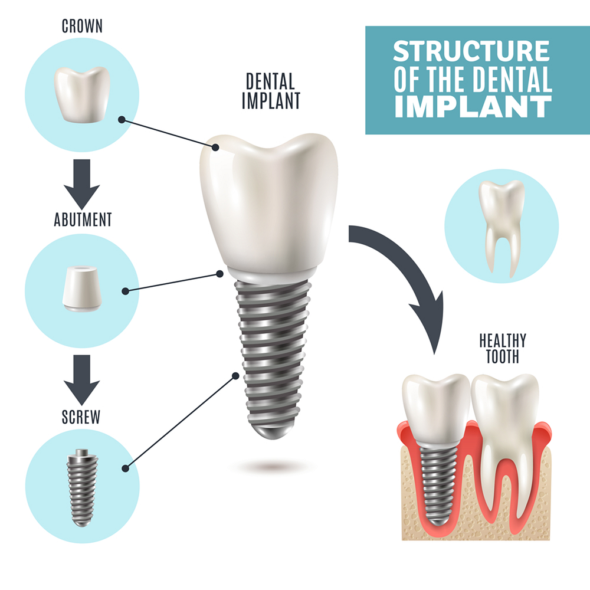
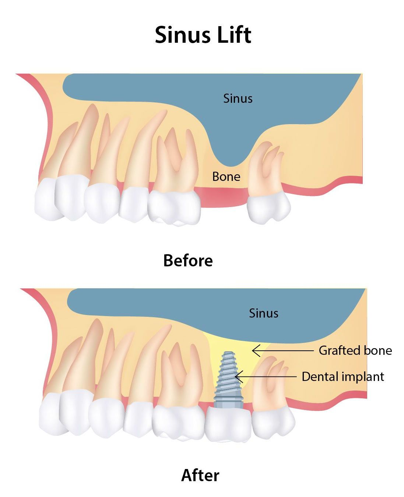

Introduction
If you’ve lost a tooth or multiple teeth due to injury, decay, or other reasons, dental implants may be the ideal solution for you. This blog will cover what dental implants are, the benefits they offer, the procedure involved, and important considerations to keep in mind.
What Are Dental Implants?
- Dental implants are artificial tooth roots, typically made of titanium, that are surgically placed into the jawbone.
- They serve as a sturdy foundation for replacement teeth, known as crowns, which are custom-made to match your natural teeth.
- Teeth(s) replacement: Implants can be used to replace a single tooth, multiple teeth, or even support a full denture.

Components of a dental implant
Dental implants are composed of several key components that work together to replace a missing tooth.
The main components of a dental implant are
1. Implant Fixture (Titanium Post or Screw)
- Material: Typically made of titanium or a titanium alloy, the implant fixture is the part that is surgically embedded into the jawbone. Titanium is used because it is biocompatible, meaning it integrates well with bone through a process called osseointegration, where the bone grows around the implant, creating a strong, permanent bond.
- Shape: The fixture often resembles a small screw or cylinder, and its size and shape may vary depending on the location and type of implant.
2. Abutment
- Material: Abutments are typically made of titanium, zirconia, or other strong, biocompatible materials.
- Shape: It may be custom-made to match the individual’s dental anatomy and to align correctly with the crown or bridge.
3. Dental Crown (or Prosthetic Tooth)
- The crown is the visible part of the dental implant and is the artificial tooth that replaces the missing one. It is usually made of porcelain, ceramic, or a porcelain-fused-to-metal material to provide strength and aesthetic appeal.
- The crown is designed to look like a natural tooth, both in color and shape, and is attached to the abutment
4. Surgical Guide (Optional)
- A surgical guide is used in some implant procedures to help the dentist or oral surgeon accurately place the implant. The guide is created from 3D imaging and serves as a template to ensure precise positioning of the implant fixture in the jawbone.
5. Cover or Healing Cap
- After the implant fixture is placed into the jawbone, a cover or healing cap may be placed on top to protect the implant during the healing process. This is typically removed later, before the abutment is placed.
6. Other components
- Bone Graft (if necessary): A bone graft is a procedure used in dental implant placement when there is insufficient healthy bone in the jaw to support the implant fixture. Bone grafts help to restore the jawbone's volume and density, ensuring a stable foundation for the implant.
- Sinus Lift (if necessary): For implants in the upper jaw, a sinus lift may be done to ensure there is enough bone to place the implant, particularly in the back of the upper jaw.

Benefits of Dental Implants
- Natural Appearance: Dental implants are designed to look and feel like your natural teeth, providing a seamless smile.
- Improved Functionality: Unlike dentures, which can slip and cause discomfort, implants are securely anchored in the jaw, allowing you to eat and speak with confidence.
- Bone Health: Implants stimulate the jawbone, preventing bone loss that often occurs after tooth loss. This helps maintain facial structure and prevents sagging.
- Longevity: With proper care, dental implants can last a lifetime, making them a cost-effective solution in the long run
- Easy Maintenance: Caring for dental implants is similar to caring for natural teeth—regular brushing, flossing, and dental check-ups are essential
Complete Dental Implant Procedure
- Initial Consultation and Planning: Your dentist will evaluate your oral health and take X-rays to determine the best approach. 3D scan (CBCT) is required.
- Implant Placement: A Dental implant is surgically placed into the jawbone under local anesthesia. This procedure may take 1-2 hours depending on the complexity of the case. Patient may feel some discomfort.
- Healing Period:After placement, the implant requires time to fuse with the bone, a process called osseointegration. This can take several months. (3-6 months).
- Abutment Placement: Once the implant has integrated with the bone, an abutment (connector) is placed on top of the implant to hold the crown.
- Crown Placement: Finally, a custom-made crown is attached to the abutment, completing the restoration.
- Follow-up Care: Maintaining good oral hygiene is crucial for the long-term success of your dental implant. This includes brushing, flossing, and avoiding habits like smoking, which can interfere with healing.
Considerations Before Getting Dental Implants
- Eligibility: Not everyone is a candidate for dental implants. Adequate bone density and good oral health are crucial for a successful procedure.
- Cost: While dental implants are more expensive than other tooth replacement options, many consider them a worthwhile investment due to their longevity.
- Time Commitment:The entire process can take several months, so patience is essential..
- Aftercare: Post-operative care is vital to ensure the healing process goes smoothly. Following your dentist's instructions is crucial.